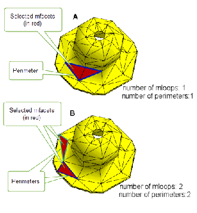

| |
Performing Evaluations On Meshes |
| <<< Filling Holes In Facet Bodies | Chapters | Introduction To Importing And Exporting >>> |
There are fundamental differences between meshes and classic B-rep surfaces which mean that the evaluation of surface parameters and normals need to be treated differently in order to produce consistent and accurate results. This chapter explains those differences and describes the APIs you should use to manage them.
When used in traditional modelling, classic B-rep surfaces are generally smooth entities. While they can contain discontinuities, a surface that contains a G1-discontinuity cannot be attached to topology. G1-discontinuities in a classic B-rep surface always occur along constant parameter lines, and you can use PK_SURF_eval_handed, PK_SURF_eval_curvature_handed, and PK_SURF_eval_with_normal_handed to distinguish which side of a discontinuity you want to evaluate.
By contrast, meshes are inherently G1-discontinuous entities, with a line of (C0) discontinuity across every mfin, and every point on an mfin has multiple parameterisations. Meshes, of course, can be attached to topology.
For the most part, Parasolid allows you to evaluate a mesh in much the same way as you evaluate a classic B-rep surface, using one of several PK_SURF_eval_... functions. You can find your position inside a mesh using the same functions you would use to find your position in a classic B-rep surface.
However, because there are no restrictions on the shape represented by a mesh, parameterisation of a mesh needs to be a discrete process that considers each facet individually, and this means that you cannot use Parasolid's surface evaluation functionality to march or step across a mesh.
Within each mfacet, Parasolid uses a linear mapping of a barycentric parameterisation . There is one mfin that is constant in U, one that is constant in V, and one that isn’t a constant in either U or V. Parasolid does not guarantee which mfin is which. This means that there is no clear U/V or left/right distinction for meshes, and so the Parasolid's “handed” evaluation functions cannot be supported for meshes.
These fundamental properties of meshes give rise to the following differences, compared to classic B-rep surfaces, when evaluating on meshes:
Parasolid provides a number of functions for evaluating mesh parameters.These are as follows:
|
Evaluates at UV-parameters on a mesh and returns the mfacet and any mfin or mvertex at the position evaluated. |
|
|
Calculates the mesh UV-parameters of a position known to lie in a given mfacet. If the mfacet is already known, it is a more efficient calculation than PK_SURF_parameterise_vector. |
|
|
Enquires the overall range for the UV-parameters on a given mesh. See the PK Interface Programming Reference Manual for more information on this function. |
Like any other type of surface, any point on a mesh has an associated normal. Broadly speaking, there are two different types of normal that you can evaluate on a mesh:
|
The normal of the plane of a given mfacet. Each mfacet in a mesh has a single mfacet normal. |
|
|
The normal of a given mvertex. Each mfacet in a mesh has three mvertex normals associated with it. See Section 89.3.2, “Managing mvertex normals” for more information on mvertex normals. |
Parasolid provides a number of functions for evaluating normals on a mesh:
|
Returns the normal at the mvertex of the given mfin. Note: If the mvertex has a unique normal, one shared by all mfins at the mvertex, then the normal returned by PK_MFIN_ask_mvx_normal will be the same as the one returned by PK_SURF_eval_with_normal. If there are multiple normals at the mvertex, PK_MFIN_ask_mvx_normal will return the normal specific to the given mfin. Several mfins at an mvertex can share the same normal. |
|
|
Returns the averaged normal at a given position on the mesh. |
Parasolid offers a variety of methods for managing mvertex normals on a mesh: You can either:
In addition, if you choose to store normal data, you can either:
This section describes the APIs Parasolid offers for managing normal data.
Parasolid provides functionality to let you enquire about the types of normal data available to a mesh.
Parasolid provides a session-wide mesh angle to let you control which parts of a mesh are considered to be smooth. You can set this mesh angle using PK_SESSION_set_mesh_angle, and enquire its current value using PK_SESSION_ask_mesh_angle.
The mesh angle partitions the ordered ring of mfacets around an mvertex into sets of mfacets that are considered to be smoothly connected, based on the angle of the normals between adjacent mfacets.
For example, two ways in which you might use the mesh angle are as follows:
Figure 89-1 Examples of using the mesh angle to control the smoothness of the mesh
|
Note: The session mesh angle only controls the smoothness of dynamic normals within a mesh. For any stored normals, the mesh angle has no effect. |
You can find the sharp mvertices in a given mesh using PK_MESH_find_sharp_mvxs. A sharp mvertex is one that does not have a unique normal, i.e the mfins at this mvertex do not share the same normal as returned from PK_MFIN_ask_mvx_normal. See Section 89.3.1, “Evaluating normals on a mesh” for more information on this function.
By default, the
want_sharp_mvxs
option returns the number of sharp mvertices together with a list of those mvertices. To return just the number of sharp mvertices, set the
want_sharp_mvxs
option to PK_LOGICAL_false.
You can find the sharp mfins in a mesh using PK_MESH_find_sharp_mfins. An mfin is considered sharp if it is non-laminar, and if, for the mvertices at either end of the mfin, the two adjacent mfacets do not share a normal as returned by PK_MFACET_ask_mvx_normals. Further control over the comparison of normals is given by the values of have_sharp_angle and sharp_angle. This function takes the following options:
Note: The decision over whether an mfin is considered sharp when
have_sharp_angle
is PK_LOGICAL_false is affected by whether normals are stored or calculated dynamically. For more information about managing mvertex normals see, Section 89.3.2, “Managing mvertex normals”. |
|
|
You use PK_MESH_store_normals to store or modify the normals on a mesh, replacing any existing stored data as required. You can choose whether to store normals for the entire mesh, or whether to replace the normals for specific mtopols in the mesh. If replacing specific normals, you can also choose whether to supply the normal data yourself, or whether to let Parasolid calculate it for you.
You do not have to store normal data on a mesh: Parasolid dynamically calculates any normals that are required if no stored data is available. These dynamic normals are stored in the mesh throughout the session and are discarded if the mesh changes.
|
Set |
|
|
Replace specific normals in the mesh with calculated normals: |
Set Supply a combination of mfins and mvertices to specify the normals you want to store. |
|
Set Supply a combination of mfins and mvertices to specify the normals you want to store.
Supply |
|
|
Replace all normals in the mesh with a combination of calculated and supplied normals |
Set Supply a combination of mfins and mvertices to specify the normals you want to supply explicitly.
Supply Any normals that are not supplied will be calculated dynamically. |
Note: When
replace
is PK_MESH_replace_normal_mtopol_c, it is an error to supply both an mfin and its mvertex |
You can also use the
mesh_angle
option to override any mesh angle specified for the session.
See PK_MESH_store_normals_o_t for more information.
You can discard any stored normals in a mesh using PK_MESH_discard_normals. Once discarded, normals for that mesh are calculated dynamically by Parasolid until you store new normal data.
You can use PK_MFACET_find_perimeters to find the perimeters around a supplied set of mfacets. A perimeter is a set of mfins that form the boundary of a set of mfin-connected mfacets.
Perimeters are returned as a set of one or more mloops. An mloop is a connected set of mfins ordered into a closed loop in the direction of the mfins. Each mloop has to have a minimum of 2 mfins which have to be:
Perimeters can contain more than one mloop. All mloops belonging to the same perimeter bound the same mfin-connected set of mfacets.
Figure 89-2 shows the perimeters and mloops of supplied subsets of mfacets on a given mesh. In (A) two mfacets (coloured in red) are selected. These are mfin-connected and therefore return 1 perimeter. A single closed mloop is also returned. In (B), the mfacets selected are mvertex-connected not mfin-connected and therefore return two perimeters and two closed mloops.
Figure 89-2 Finding perimeters and mloops on a subset of mfacets on a mesh
Knowing the perimeters and mloops for a subset of mfacets allows you to split complex mesh bodies into multiple mesh faces, making it easier to modify or replace certain parts of the mesh body.
PK_MFACET_find_perimeters takes the following options:
|
Whether to return further information about each mloop. When this is set to PK_LOGICAL_true, the polylines that represent the mloop and the tracking mfin for each polyline are returned. |
|
|
A callback function used to determine how to propagate from an initial seed mtopol. See Section 85.4.2, “Creating meshes from mesh topology”, for more information.
If you use a |
|
|
Context information required by |
|
|
The class type of the input mtopol to pass to |
|
|
Whether to include wire mfins in the perimeter of an mfacetset. See Section 89.4.1, “Including wire mfins in the perimeter of a set of mfacets”, for more information. Default: PK_selector_type_exclude_c |
|
|
The minimum number of mfacets in an mfacetset. The perimeter and other data for mfacetsets that contain at least this number of mfacets is returned. |
If the supplied set of mfacets contains internal edges that you want to use in further operations, you can use the
select_wire_mfins
option to return them by including wire mfins in the perimeter. An mfin that forms part of the perimeter of a set of mfacets is considered to be a wire mfin if both it and its adjacent mfin (i.e the mfin returned from PK_MFIN_ask_mfin_adjacent) lie on the perimeter.
The
select_wire_mfins
option takes the following values:
|
Wire mfins and their adjacent mfins are included in the perimeter, as illustrated in Figure 89-3. |
|
|
Wire mfins are not included in the perimeter, as illustrated in Figure 89-3. |
Figure 89-3 shows an example where the selected set of mfacets contain sharp mfins. A) shows the perimeter returned when wire mfins are included in the result, and B) shows the perimeter returned when wire mfins are excluded.
Figure 89-3 Including and excluding wire mfins in the perimeter
You can find the mvertices and/or mfins along a given fin using PK_FIN_find_mtopols.
The
want_mvertices
option controls whether to return an array of mvertices along with the number of those mvertices. The
want_mfins
option controls whether to return an array of mfins along with the number of those mfins. By default, these options are set to PK_LOGICAL_true. To return just the number of mvertices and/or mfins, these options must be set to PK_LOGICAL_false.
Figure 89-4 Finding the mfins and mvertices along a fin
| <<< Filling Holes In Facet Bodies | Chapters | Introduction To Importing And Exporting >>> |